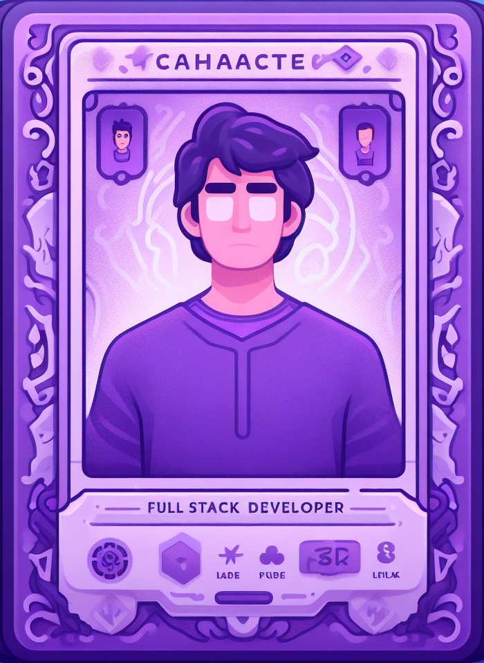

About
After college, I set out on a mission to become a full-stack developer. That's when I stumbled upon The Odin Project,
and I decided to dive into the world of coding through the Ruby path. Now, I find myself building websites with Ruby on
Rails. I like building tools that make my life easier and I can do that with web development.
This journey has been more than just learning; it's been about discovering the joy of bringing ideas to life in the
virtual world.
